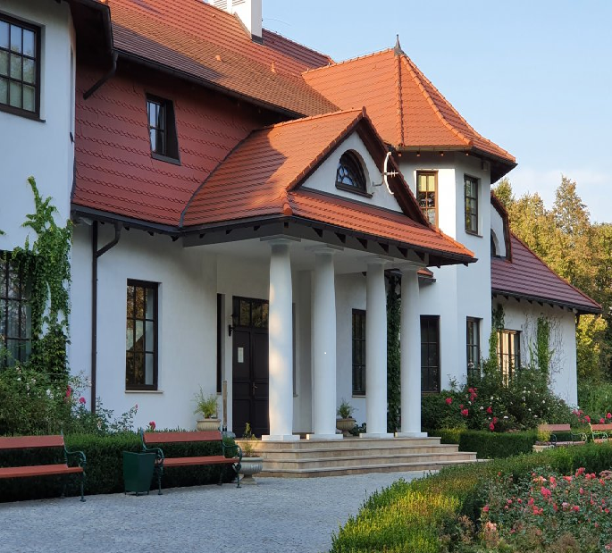
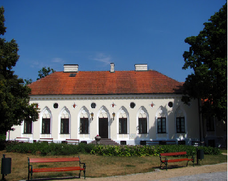

Opinogóra
Historia
Opinogóra po raz pierwszy została wymieniona w dokumencie kościelnym z 1185 roku. Prawdopodobnie około 1400 r. uległa podziałowi na dwie części – Opinogórę Górną i Dolną. Właścicielami obu wsi była szlachta. W 1421 r. Opinogóra Górna została włączona do domeny książęcej za sprawą księcia mazowieckiego Janusza. Następnie w 1526 r., kiedy to włączono Mazowsze do Korony, Opinogóra Górna stała się wsią królewską i starostwem niegrodowym.Pochodzenie nazwy
Nazwa Opinogóra pochodzi prawdopodobnie od nazwiska Opin. Taką wersję podał w swoim młodzieńczym utworze Pan trzech pagórków Zygmunt Krasiński. W dziele tym poeta napisał, że w zamierzchłych czasach na opinogórskich wzgórzach osiadł krwawy książę prasłowiański Opin. Prawdopodobnie ów Opin jest wytworem wyobraźni Krasińskiego, ponieważ żadne źródła historyczne nie potwierdzają istnienia takiego księcia. Niemniej etymologia przedstawiona przez poetę przyjęła się powszechnie z jedną tylko poprawką, iż Opin miał być księciem pruskim, nie słowiańskim.Zabytki
Zamek

Dworek
Oficyna
Kościól

Memory

Opinogóra 2021